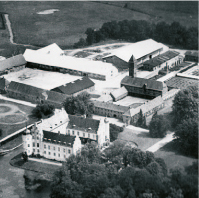
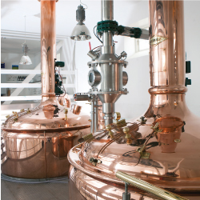
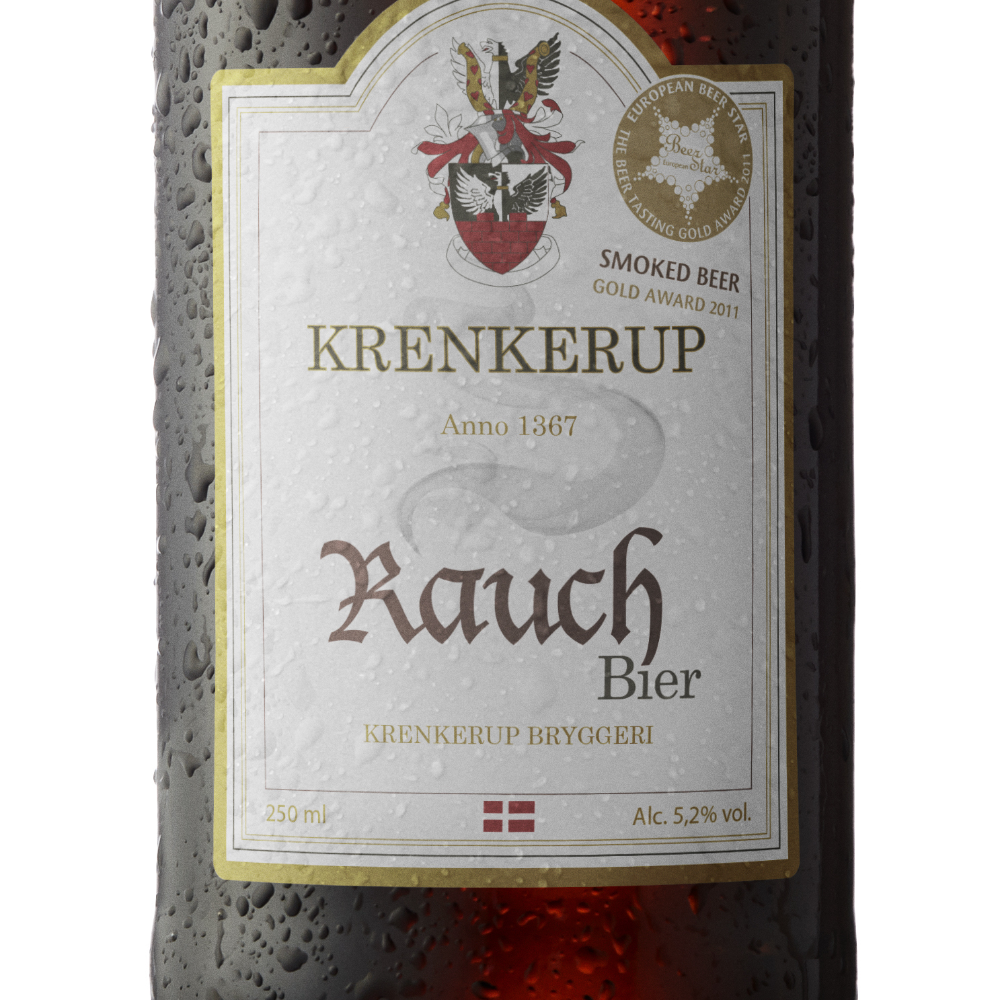
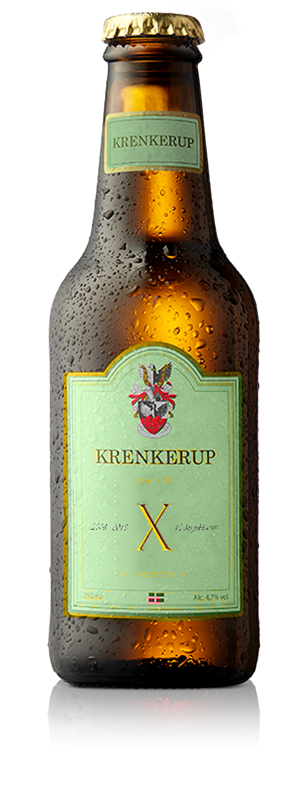

Historien

Begyndelsen
1367
Krenkerup er et brand, der ærer den særlige historie og slægternes stolte arbejde gennem mere end 600 år. Hver enkel øl bærer præg af æstitik, kompromiløs kvalitet, rene råvarer - og taknemmelighed for medarbejdernes støtte gennem flere hundrede år. Krenkerup øl er skabt med omtanke for bæredygtighed og det rene resultat - “fra jord til bord” værdier.

Lille bryggeri - Stor smag
2008
12. august 2008 blev den første bryg sat over på Krenkerup Bryggeri. Første bryg var vores traditionsrige høstøl,
og siden da, er der løbet mange flere varianter igennem slangerne på bryggeriet.
Øl fra Krenkrup Bryggeri er brygget med dansk malt, og vi brygger efter den bayerske Reinheitsgebot, der stiller høje krav til rene
råvarer, og ingen anvendelse af E-numre. Det sikre dansk kvalitetsøl, brygget på vand, malt, humle, gær og intet andet.

Europas bedste
2011
Hos Krenkerup Bryggeri bestræber vi os på, at brygge Europas bedste kvalitetsøl. Vi sigter højt efter målet, og er i den grad på rette vej. I 2011 blev vores Rauch Bier kåret til Europas bedste røg øl, ved European Beer Star, en af verdens mest anerkendte øl-konkurrencer. Derudover blev vores Doppel Bock kåret til den bedste Doppel Bock ved samme konkurrence i 2012.

10 års fødselsdag
2018
I 2018 kan vi på Krenkerup Bryggeri stolt fejre 10 års fødselsdag. I løbet af 10 år, er der løbet over 15 forskellige slags øl igennem slangerne på Krenkrup Bryggeri. Allesammen brygget af urokkelig kvalitet efter den beyerske Reinhetsgebot. Dette fejre vi med en jubilæumsøl, der trækker rødderne tilbage til høstøllen, hvor det hele startede.

En hyldest til originalen
Inspiration
Vores jubileums øl er inspireret af den første øl, der blev brygget på Krenkerup Bryggeri. Vores traditionsrige høstøl er populær blandt mange, og har en speciel plads i hjertet hos alle på og omkring Krenkreup. Det faldt ganske naturligt, at jubilæeumsøllen skulle minde om vores høstøl.
Brygningen
Vores jubilæums øl er ligesom alle vores andre varianter brygget efter den bayerske Reinheitsgebot. Det vil sige uden nogen former for tilæstningstoffer.
Følg os
God øl i indbakken
Få informationer om nye produkter, eksklusive begivenheder og smagninger.
Gå på opdagelse i Krenkerup
Vi har skabt et unikt univers, hvor du kan se mere om historien, produkterne, og komme med ‘bag facaden’ hos Krenkerup Bryggeri.